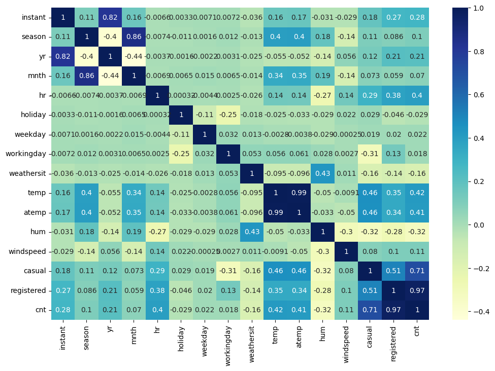
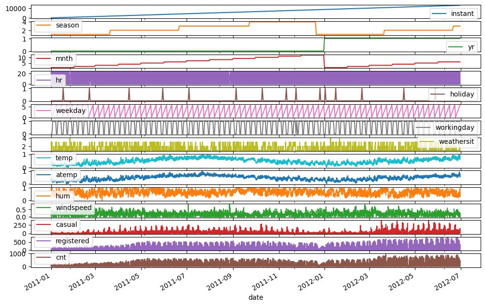
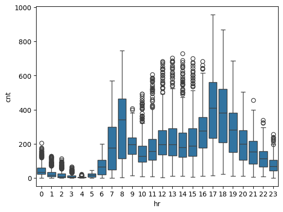
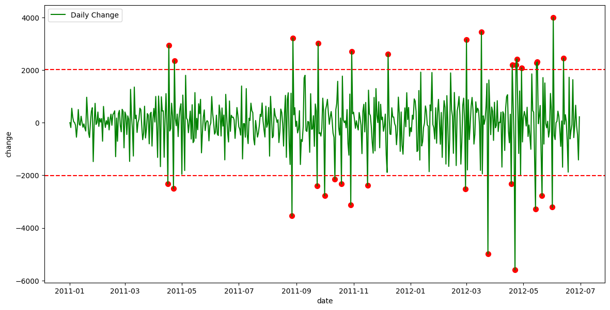
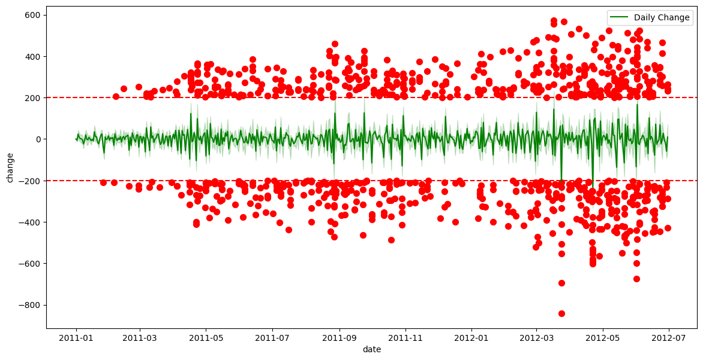
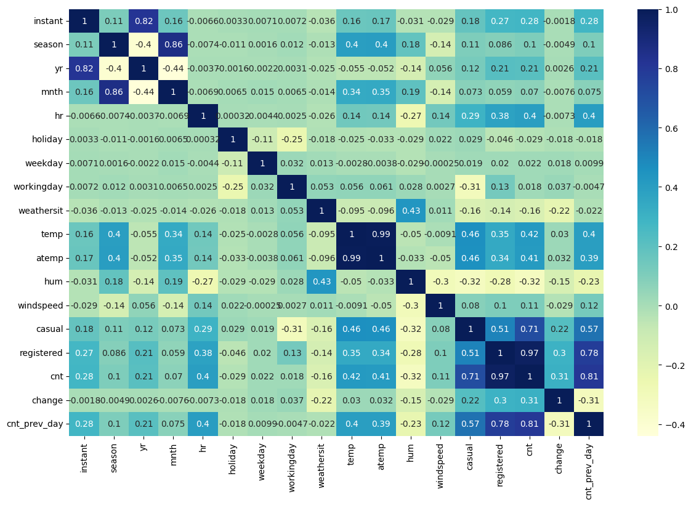
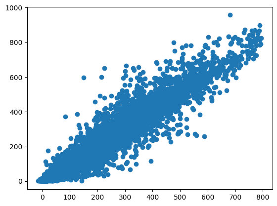
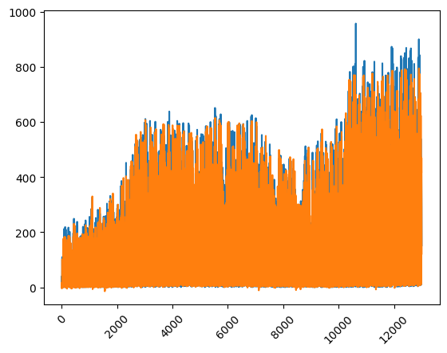
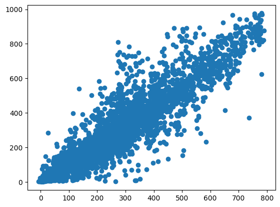

Using 2 years of weather and bike-sharing data, I built a machine learning model to predict the number of bike rentals in any given hour. This post covers the exploratory data analysis, data preprocessing, feature selection, and model evaluation.
This project began as a short exercise for a job interview, but I wanted to expand on it in a more instructional way, explaining my thought process, the reasoning behind certain decisions, and how these steps can be applied to any classification or regression problem. Since the original dataset was provided as part of the interview, I’ll be using an open-source dataset instead for this blog post.
As you can guess from the title, the dataset contains bike-sharing demand data. More specifically, it records the hourly count of rental bikes between 2011 and 2012 in the Capital Bikeshare system, along with corresponding weather and seasonal information. This dataset was introduced in the paper Event labeling combining ensemble detectors and background knowledge by Hadi Fanaee-T and João Gama in 2013.
I consider it a great dataset for guiding you through the steps needed to analyse a dataset and build a regression model. If you want to follow along the blog you can download the Jupyter notebook.
Let’s begin by downloading the dataset and preparing the data. The dataset is hosted on Kaggle here. To download it, you’ll first need to install the Kaggle API on your computer, generate an API key, and then run the following command in a terminal.
kaggle datasets download -d lakshmi25npathi/bike-sharing-dataset
Now, moving to Python, we can extract the dataset into a folder called bike-sharing-dataset and later load it into a Pandas DataFrame using:
import zipfile
import pandas as pd
with zipfile.ZipFile("bike-sharing-dataset.zip", 'r') as zip_ref:
zip_ref.extractall("bike-sharing-dataset")
df = pd.read_csv("./bike-sharing-dataset/hour.csv")
From the dataset information on Kaggle, we can see that it includes three different counts we might want to predict: the number of casual users, registered users, or the total count.
Now, we can inspect the data, check for missing values, and identify any inconsistencies across all variables.
display(df.info())
RangeIndex: 17379 entries, 0 to 17378
Data columns (total 17 columns):
# Column Non-Null Count Dtype
--- ------ -------------- -----
0 instant 17379 non-null int64
1 dteday 17379 non-null object
2 season 17379 non-null int64
3 yr 17379 non-null int64
4 mnth 17379 non-null int64
5 hr 17379 non-null int64
6 holiday 17379 non-null int64
7 weekday 17379 non-null int64
8 workingday 17379 non-null int64
9 weathersit 17379 non-null int64
10 temp 17379 non-null float64
11 atemp 17379 non-null float64
12 hum 17379 non-null float64
13 windspeed 17379 non-null float64
14 casual 17379 non-null int64
15 registered 17379 non-null int64
16 cnt 17379 non-null int64
dtypes: float64(4), int64(12), object(1)
memory usage: 2.3+ MB
The first thing to notice is that the dteday column, which represents a date, is not automatically imported as a datetime type by Pandas. This isn’t particularly important in this dataset since other features already encode the date, but we’ll address it during the exploratory data analysis.
Another key point is that there are no missing values, so we don’t need to apply imputation techniques or remove rows/columns due to excessive missing data.
Now, we can examine the distribution of values in each column using df.describe().
| instant | season | yr | mnth | hr | holiday | weekday | workingday | weathersit | temp | atemp | hum | windspeed | casual | registered | cnt | |
|---|---|---|---|---|---|---|---|---|---|---|---|---|---|---|---|---|
| count | 17379.0000 | 17379.000000 | 17379.000000 | 17379.000000 | 17379.000000 | 17379.000000 | 17379.000000 | 17379.000000 | 17379.000000 | 17379.000000 | 17379.000000 | 17379.000000 | 17379.000000 | 17379.000000 | 17379.000000 | 17379.000000 |
| mean | 8690.0000 | 2.501640 | 0.502561 | 6.537775 | 11.546752 | 0.028770 | 3.003683 | 0.682721 | 1.425283 | 0.496987 | 0.475775 | 0.627229 | 0.190098 | 35.676218 | 153.786869 | 189.463088 |
| std | 5017.0295 | 1.106918 | 0.500008 | 3.438776 | 6.914405 | 0.167165 | 2.005771 | 0.465431 | 0.639357 | 0.192556 | 0.171850 | 0.192930 | 0.122340 | 49.305030 | 151.357286 | 181.387599 |
| min | 1.0000 | 1.000000 | 0.000000 | 1.000000 | 0.000000 | 0.000000 | 0.000000 | 0.000000 | 1.000000 | 0.020000 | 0.000000 | 0.000000 | 0.000000 | 0.000000 | 0.000000 | 1.000000 |
| 25% | 4345.5000 | 2.000000 | 0.000000 | 4.000000 | 6.000000 | 0.000000 | 1.000000 | 0.000000 | 1.000000 | 0.340000 | 0.333300 | 0.480000 | 0.104500 | 4.000000 | 34.000000 | 40.000000 |
| 50% | 8690.0000 | 3.000000 | 1.000000 | 7.000000 | 12.000000 | 0.000000 | 3.000000 | 1.000000 | 1.000000 | 0.500000 | 0.484800 | 0.630000 | 0.194000 | 17.000000 | 115.000000 | 142.000000 |
| 75% | 13034.5000 | 3.000000 | 1.000000 | 10.000000 | 18.000000 | 0.000000 | 5.000000 | 1.000000 | 2.000000 | 0.660000 | 0.621200 | 0.780000 | 0.253700 | 48.000000 | 220.000000 | 281.000000 |
| max | 17379.0000 | 4.000000 | 1.000000 | 12.000000 | 23.000000 | 1.000000 | 6.000000 | 1.000000 | 4.000000 | 1.000000 | 1.000000 | 1.000000 | 0.850700 | 367.000000 | 886.000000 | 977.000000 |
From this, we can see that the features in the dataset are already preprocessed. The columns temp, atemp, hum, and windspeed are scaled between 0 and 1, while all other columns are ordinally encoded. This preprocessing will be beneficial during feature engineering.
Since the data is time-based, we’ll use the first year and a half for training and the last six months for testing. This approach mimics a real-world scenario where historical data is used to predict future outcomes.
Additionally, we use the copy() method to create a deep copy of the original DataFrame, preventing unintended modifications that could affect the original data.
train_df = df[(df['yr'] == 0) | ((df['yr'] == 1) & (df['mnth'] <= 6))].copy()
test_df = df[~df.index.isin(train_df.index)].copy()
As mentioned earlier, the dataset has three possible target variables. For this blog post, we will focus solely on predicting the total number of users. Therefore, we drop the casual and registered columns and set cnt as our label.
Once again, note the use of copy() to ensure we create a deep copy and avoid unintended modifications to the original DataFrame.
X_train, y_train = train_df.drop(columns=["cnt","casual","registered"]).copy(), train_df["cnt"].copy()
X_test, y_test = test_df.drop(columns=["cnt","casual","registered"]).copy(), test_df["cnt"].copy()
The first step I like to take in an exploratory data analysis before training a model is examining the correlation matrix; a table that displays the correlation coefficients between variables, indicating the strength and direction of their relationships.
Here, we plot a heatmap of the correlation matrix. From this, we can already see that the most useful features are likely to be temp, atemp, hr, and hum, as they all show a correlation with the target variable.
sns.heatmap(train_df.corr(numeric_only=True), cmap="YlGnBu", annot=True)

Note: We are using only the training data in this analysis to ensure that our decisions are based solely on the training set, preventing any unintended “leakage” into the final testing phase. If you are conducting an exploratory data analysis without planning to train a model later, this step would not be necessary.
Since the data represents bike rentals, we can plot all variables against the date to identify any patterns or seasonal trends throughout the year.
train_df['date'] = pd.to_datetime(train_df['dteday'])
train_df.plot(subplots=True, x="date", figsize=(12, 8))

We can observe some seasonality in the number of users, which is most likely influenced by the temperature.
Another expected factor is that the time of day affects the number of bike rentals, so let’s plot that as well.
sns.boxplot(data=train_df, x='hr', y='cnt')

We can observe peaks in usage during commuting hours (7-8 AM and 5-7 PM), with many outliers during other hours, which could potentially affect the performance of the models.
Another interesting aspect to explore is the daily change in bike rentals.
daily_data = train_df.groupby('date').agg({'cnt': 'sum'}).reset_index()
daily_data['change'] = daily_data['cnt'].diff()
daily_data['change'] = daily_data['change'].fillna(0)
threshold = daily_data['change'].std() * 2 # Threshold: 2 * standard deviation
anomalies = daily_data[abs(daily_data['change']) > threshold]
fig, ax = plt.subplots(figsize=(14, 7))
sns.lineplot(data=daily_data, x='date', y='change', ax=ax, label='Daily Change', color='green')
ax.scatter(anomalies['date'], anomalies['change'], color='red', label='Anomaly', s=50)
ax.axhline(threshold, color='red', linestyle='--', label='Positive Threshold')
ax.axhline(-threshold, color='red', linestyle='--', label='Negative Threshold')

This suggests that we could potentially use data from the previous day to improve predictions for the following day. Let’s explore that possibility.
train_df['change'] = train_df['cnt'] - train_df['cnt'].shift(24)
train_df['change'] = train_df['change'].fillna(0)
threshold = train_df['change'].std() * 2 # Threshold: 2 * standard deviation
anomalies = train_df[abs(train_df['change']) > threshold]
fig, ax = plt.subplots(figsize=(14, 7))
sns.lineplot(data=train_df, x='date', y='change', ax=ax, label='Daily Change', color='green')
ax.scatter(anomalies['date'], anomalies['change'], color='red', label='Anomaly', s=50)
ax.axhline(threshold, color='red', linestyle='--', label='Positive Threshold')
ax.axhline(-threshold, color='red', linestyle='--', label='Negative Threshold')
print("Total number of data points:", train_df.shape[0])
print("Number of anomalies:", anomalies.shape[0])
print(f"Percentage of anomalies: {100*anomalies.shape[0]/train_df.shape[0]:.2f}%")
Total number of data points: 13003
Number of anomalies: 860
Percentage of anomalies: 6.61%

From this plot, we can see that there are significantly more outliers compared to the daily count, though the percentage of anomalies remains relatively small. However, if we replot the correlation matrix, we can observe that these engineered feature could still provide valuable insights.
train_df['cnt_prev_day'] = train_df['cnt'].shift(24)
train_df['cnt_prev_day'] = train_df['cnt_prev_day'].fillna(0)
plt.figure(figsize=(14, 9))
sns.heatmap(train_df.corr(numeric_only=True), cmap="YlGnBu", annot=True)

From the data analysis, we observed that the count from the previous day could be useful, so we will add that first.
X_train_transformed = X_train.copy()
X_train_transformed['cnt_prev_day'] = y_train.shift(24)
X_train_transformed['cnt_prev_day'] = X_train_transformed['cnt_prev_day'].fillna(0)
As mentioned earlier, the features in this dataset have already undergone some preprocessing. For instance, temp, atemp, hum, and windspeed are scaled between 0 and 1, the remaining features are ordinally encoded, and there are no missing values. The only modifications we might consider are using one-hot encoding instead of ordinal encoding, or testing a decomposition technique like Principal Component Analysis (PCA). I’ve created three DataFrames to evaluate which encoding method works best and whether PCA proves useful. I won’t show the code here, as it’s a bit more involved, but you can find it in the Jupyter notebook.
Here, we test several algorithms with different parameter settings using grid search. The grid search explores a range of parameter values, though the selected parameters are not highly optimised.
models = {
"Random Forest": RandomForestRegressor(random_state=0),
"Hist Gradient Boosting": HistGradientBoostingRegressor(random_state=0, early_stopping=False),
'ElasticNet': ElasticNet(random_state=0),
'xgb': xgb.XGBRegressor(random_state=0)
}
param_grids = {
"Random Forest": {"n_estimators": [10, 20, 50, 100]},
"Hist Gradient Boosting": {"max_iter": [10, 20, 50, 100, 300]},
'ElasticNet': {"alpha": [0.01, 0.1, 1], "l1_ratio": [0.2, 0.5, 0.8, 1.0]}, # l1_ratio == 1.0 is equivalent to Lasso
'xgb':{"n_estimators": [10, 20, 50, 100]}
}
cv = KFold(n_splits=4, shuffle=False)
for X_transformed in [X_transformed_1,X_transformed_2,X_transformed_3]:
print("============")
for name, model in models.items():
grid_search = GridSearchCV(
estimator=model,
param_grid=param_grids[name],
return_train_score=True,
cv=cv,
n_jobs=-1,
).fit(X_transformed, y_train)
print(name, grid_search.best_params_, grid_search.best_score_)
============ One Hot Encoder
Random Forest {'n_estimators': 100} 0.7237796612387587
Hist Gradient Boosting {'max_iter': 50} 0.7663063586806613
ElasticNet {'alpha': 0.01, 'l1_ratio': 0.2} 0.689208549248405
xgb {'n_estimators': 20} 0.729716345667839
============ Ordinal Encoder
Random Forest {'n_estimators': 20} 0.7380497136926296
Hist Gradient Boosting {'max_iter': 50} 0.7970622263403604
ElasticNet {'alpha': 0.1, 'l1_ratio': 0.8} 0.6327096252754385
xgb {'n_estimators': 20} 0.7482473403215408
============ PCA
Random Forest {'n_estimators': 100} 0.5839788307210804
Hist Gradient Boosting {'max_iter': 50} 0.6267378200940041
ElasticNet {'alpha': 1, 'l1_ratio': 1.0} 0.6129175015796107
xgb {'n_estimators': 20} 0.6011636257171631
From this comparison, we can see that the ensemble models perform better with ordinal encoding, while the linear model works better with one-hot encoding. Overall, the best-performing models are HistGradientBoosting and XGBoost.
One thing I like to do is combine the best models using a voting ensemble. In my experience, this approach tends to be more beneficial for classification tasks, but it can also provide improvements for regression.
reg1 = HistGradientBoostingRegressor(early_stopping=False, random_state=0, max_iter=50)
reg2 = xgb.XGBRegressor(random_state=0)
v_reg = VotingRegressor(estimators=[('hgb', reg1), ('rf', reg2)])
float(cross_val_score(v_reg, X_transformed_2, y_train, cv=cv, scoring='r2').mean())
0.7723058174761523
This time, there was no noticeable improvement; therefore, we will proceed with the HistGradientBoostingRegressor moving forward.
Now that we’ve selected the model, we can perform hyperparameter tuning to further improve its performance. We only test two values per parameter, as the number of tests conducted by the grid search increases exponentially with the number of parameters.
model = HistGradientBoostingRegressor(
random_state=0, early_stopping=False)
param_grid = {
"learning_rate": [0.01, 0.1], # Lower values for more stable learning
"max_iter": [100, 200], # Number of boosting iterations
"max_leaf_nodes": [15, 31], # Controls tree complexity
"min_samples_leaf": [10, 20], # Minimum samples per leaf
"l2_regularization": [0, 0.5], # Regularization strength
"max_depth": [None, 5], # Depth of each tree (None means unlimited)
"loss": ["squared_error", "absolute_error"], # Loss function (MSE or MAE)
}
cv = KFold(n_splits=4, shuffle=False)
grid_search = GridSearchCV(
estimator=model,
param_grid=param_grid,
return_train_score=True,
cv=cv,
n_jobs=-1,
).fit(X_transformed_2, y_train)
print(grid_search.best_params_, grid_search.best_score_)
final_pipeline = preprocessing_pipeline_2
final_model = HistGradientBoostingRegressor(random_state=0, early_stopping=False, **grid_search.best_params_)
final_model.fit(X_transformed_2, y_train)
After obtaining the best parameters, we can train the model using all available training data and are now ready to evaluate its performance.
Before using the testing data, we want to evaluate the model on the training data. We would expect good performance, as the model has seen all the data points, but we wouldn’t want perfect scores, as this would indicate overfitting. Additionally, we can plot the actual versus predicted counts to visually assess the model’s accuracy.
train_predictions = final_model.predict(X_transformed_2)
_ = plt.scatter(train_predictions, y_train)
mae = mean_absolute_error(y_train, train_predictions)
mse = mean_squared_error(y_train, train_predictions)
r2 = r2_score(y_train, train_predictions)
mape = mean_absolute_percentage_error(y_train, train_predictions)
explained_variance = explained_variance_score(y_train, train_predictions)
print(f"Mean Absolute Error (MAE): {mae:.2f}")
print(f"Mean Squared Error (MSE): {mse:.2f}")
print(f"R-squared (R²): {r2:.2f}")
print(f"Mean Absolute Percentage Error (MAPE): {mape:.2f}")
print(f"Explained Variance Score: {explained_variance:.2f}")
Mean Absolute Error (MAE): 23.31
Mean Squared Error (MSE): 1688.57
R-squared (R²): 0.93
Mean Absolute Percentage Error (MAPE): 0.32
Explained Variance Score: 0.93

Another way to visualise the predictions versus the actual data is by comparing each data point for each instant.
plt.plot(X_train["instant"], y_train)
plt.plot(X_train["instant"], train_predictions)
_ = plt.xticks(rotation=45)

From the last plot, we can see that the model tends to underestimate values towards the end, predicting lower than the actual values. This may suggest that the number of users is increasing over time, and the model is not capturing this trend effectively, even in the training data.
Next, we evaluate the model using the test data. As expected, the plot and metrics show that the predictions are not as accurate as on the training data, but the results are still reasonably good.
X_test_transform = X_test.copy()
X_test_transform['cnt_prev_day'] = y_test.shift(24)
X_test_transform['cnt_prev_day'] = X_test_transform['cnt_prev_day'].fillna(0)
X_test_transform = final_pipeline.fit_transform(X_test_transform)
predictions = final_model.predict(X_test_transform)
plt.scatter(predictions, y_test)
mae = mean_absolute_error(y_test, predictions)
mse = mean_squared_error(y_test, predictions)
r2 = r2_score(y_test, predictions)
mape = mean_absolute_percentage_error(y_test, predictions)
explained_variance = explained_variance_score(y_test, predictions)
print(f"Mean Absolute Error (MAE): {mae:.2f}")
print(f"Mean Squared Error (MSE): {mse:.2f}")
print(f"R-squared (R²): {r2:.2f}")
print(f"Mean Absolute Percentage Error (MAPE): {mape:.2f}")
print(f"Explained Variance Score: {explained_variance:.2f}")
Mean Absolute Error (MAE): 51.24
Mean Squared Error (MSE): 6882.47
R-squared (R²): 0.86
Mean Absolute Percentage Error (MAPE): 0.41
Explained Variance Score: 0.87

When plotting over time, we can observe what we discussed earlier: the model is underestimating values, likely because the number of users has increased over time. Since the model didn’t have access to future data, it couldn’t account for this trend.
plt.plot(X_test["instant"], y_test)
plt.plot(X_test["instant"], predictions)
_ = plt.xticks(rotation=45)
In this code, we use the permutation importance method to assess the significance of each feature in the trained model. The permutation_importance function computes the importance of each feature by randomly shuffling its values and evaluating the change in model performance. The output shows the mean importance scores and their associated standard deviations for each feature. Features with a significant impact on the model, such as hr and cnt_prev_day, are highlighted, while those with little effect, like holiday, have near-zero importance. This helps us understand which features are driving the model’s predictions.
r = permutation_importance(final_model, X_transformed_2, y_train,
n_repeats=30,
random_state=0)
for i in r.importances_mean.argsort()[::-1]:
if r.importances_mean[i] - 2 * r.importances_std[i] > 0:
print(f"{X_transformed_2.columns[i]:<8}\t"
f"{r.importances_mean[i]:.3f}"
f" +/- {r.importances_std[i]:.3f}")
hr 0.491 +/- 0.007
cnt_prev_day 0.429 +/- 0.006
workingday 0.091 +/- 0.002
weekday 0.074 +/- 0.002
instant 0.071 +/- 0.002
weathersit 0.038 +/- 0.001
hum 0.033 +/- 0.001
temp 0.030 +/- 0.001
atemp 0.015 +/- 0.001
windspeed 0.002 +/- 0.000
season 0.002 +/- 0.000
mnth 0.001 +/- 0.000
holiday 0.000 +/- 0.000
Error Analysis
It’s essential to investigate where the model performed poorly in order to identify areas for improvement. By focusing on these weak spots, we can refine the model and enhance its overall performance.
Consider the Increasing Trend of Users Over Time
The increasing trend in user numbers over time may not be captured by the model, leading to underestimations, especially in later periods. Recognising this pattern can help in adjusting the model to better account for time-dependent factors.
Outliers
Outliers can significantly affect the model’s predictions. It’s important to identify and understand them, as they may reveal underlying patterns or issues in the data that need addressing.
Reiterate
After evaluating the model, make necessary adjustments to features, model parameters, or even consider trying a different model type. However, always be cautious not to overfit to the testing data by performing too many iterations. A separate validation set, which should only be used once, can help prevent overfitting.
CI/CD Stage
In the CI/CD stage, the focus shifts to deploying the model and ensuring it is continually monitored for performance. Monitoring is key to maintaining model accuracy and catching any potential issues that may arise over time.
In this blog post, we explored the process of building a regression model to predict bike-sharing demand. Through data preprocessing, feature engineering, and model selection, we developed a robust model that provides valuable insights. While the model performs well overall, there are areas for improvement, such as accounting for the increasing trend of users over time.
I hope this blog post has been useful to you in understanding the process of building and evaluating a regression model, and that you can apply these techniques to your own projects. If you have any feedback or suggestions for improvement, feel free to reach out via email or LinkedIn.